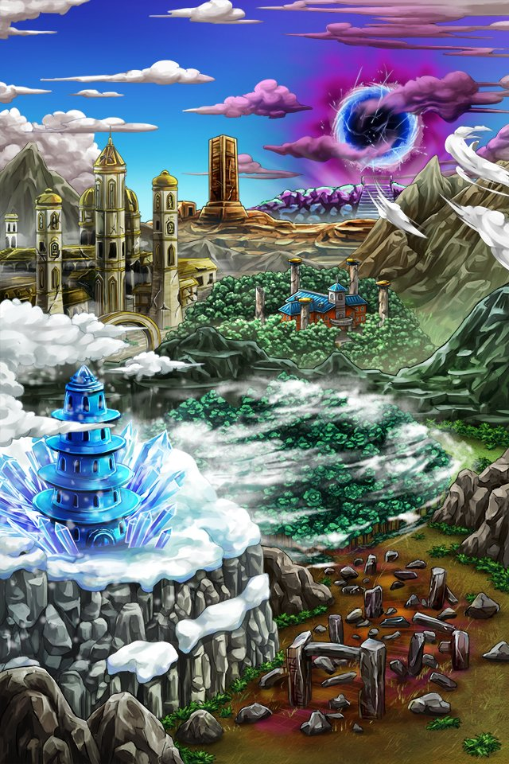

エンセルビスを解放せし者…Shou-chanよ…
我が力を使い堕神が封じられし地パルミナへと旅立つがよい…
悲哀に包まれし世界に新たな福音をもたらすため…
己の力を信じ前へと歩み続けるのだ…


ティリス
Shou-chan～！ ついにパルミナまで来たねっ！
ティリス
カルデスが封印されている 異界パルミナまでもう少し！
ティリス
ゼブラも倒したShou-chanなら このまま一気に行けちゃうかもね♪
ティリス
ここは昔、パルミナっていう王国があって、 神々と激しく戦ったんだ。
ティリス
彷徨い続ける 魂や魔物たちと一緒にね…。
ティリス
それじゃあ、私はこれから 異界への行き方を調べてくるから、
ティリス
Shou-chanは ゆっくり進んでていいよ～♪
ティリス
この廃道を抜けた先にある オブセリアン城で待ってるね！